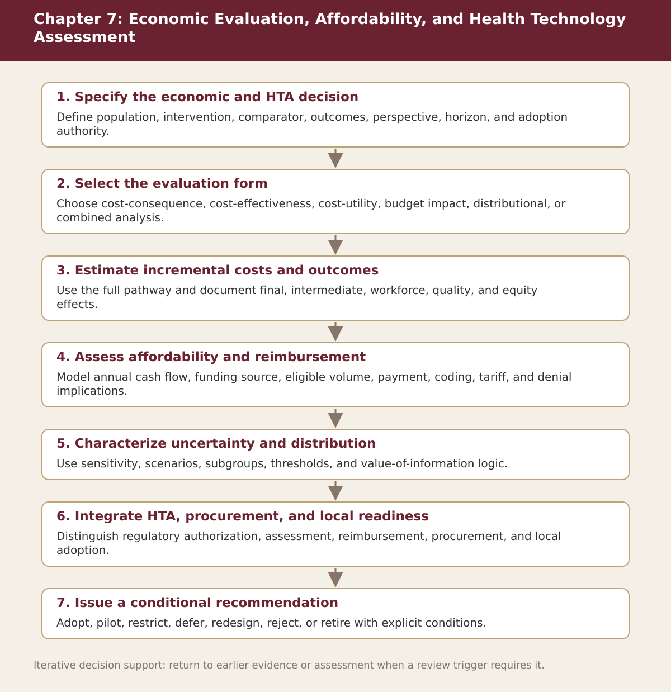

Chapter 7
Economic Evaluation, Affordability, and Health Technology Assessment
Chapter-level process map linking the chapter’s decision questions to the companion resources and decision gates.

Process steps
| Step | Stage | Purpose | Required Input | Expected Output | Decision Or Gate |
|---|---|---|---|---|---|
| 1 | Specify the economic and HTA decision | Define population, intervention, comparator, outcomes, perspective, horizon, and adoption authority. | Local evidence and the prior approved step | Versioned record for: Specify the economic and HTA decision | Proceed, revise, escalate, restrict, or stop as appropriate |
| 2 | Select the evaluation form | Choose cost-consequence, cost-effectiveness, cost-utility, budget impact, distributional, or combined analysis. | Local evidence and the prior approved step | Versioned record for: Select the evaluation form | Proceed, revise, escalate, restrict, or stop as appropriate |
| 3 | Estimate incremental costs and outcomes | Use the full pathway and document final, intermediate, workforce, quality, and equity effects. | Local evidence and the prior approved step | Versioned record for: Estimate incremental costs and outcomes | Proceed, revise, escalate, restrict, or stop as appropriate |
| 4 | Assess affordability and reimbursement | Model annual cash flow, funding source, eligible volume, payment, coding, tariff, and denial implications. | Local evidence and the prior approved step | Versioned record for: Assess affordability and reimbursement | Proceed, revise, escalate, restrict, or stop as appropriate |
| 5 | Characterize uncertainty and distribution | Use sensitivity, scenarios, subgroups, thresholds, and value-of-information logic. | Local evidence and the prior approved step | Versioned record for: Characterize uncertainty and distribution | Proceed, revise, escalate, restrict, or stop as appropriate |
| 6 | Integrate HTA, procurement, and local readiness | Distinguish regulatory authorization, assessment, reimbursement, procurement, and local adoption. | Local evidence and the prior approved step | Versioned record for: Integrate HTA, procurement, and local readiness | Proceed, revise, escalate, restrict, or stop as appropriate |
| 7 | Issue a conditional recommendation | Adopt, pilot, restrict, defer, redesign, reject, or retire with explicit conditions. | Local evidence and the prior approved step | Versioned record for: Issue a conditional recommendation | Proceed, revise, escalate, restrict, or stop as appropriate |